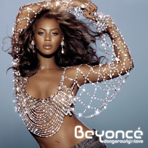
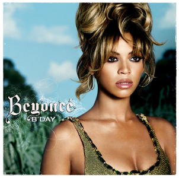
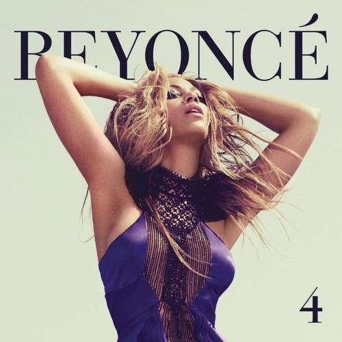
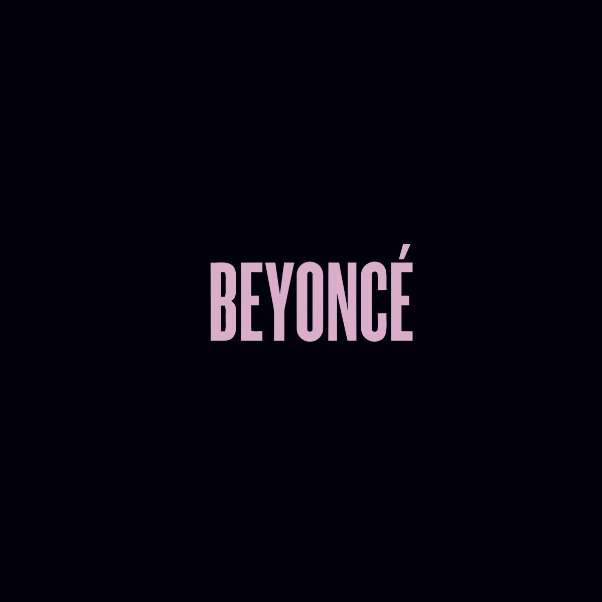
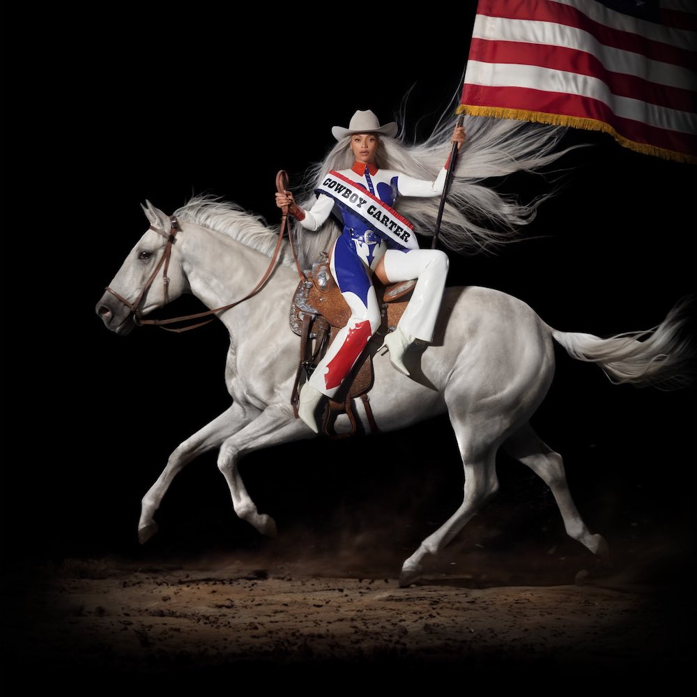

Dangerously in Love (2003)

Tracklist
- Crazy in Love (featuring Jay-Z)
- Naughty Girl
- Baby Boy (featuring Sean Paul)
- Hip Hop Star (featuring Big Boi and Sleepy Brown)
- Be with You
- Me, Myself and I
- Yes
- Signs (featuring Missy Elliott)
- Speechless
- That's How You Like It (featuring Jay-Z)
- The Closer I Get to You (duet with Luther Vandross)
- Dangerously in Love 2
- Beyoncé Interlude
- Gift from Virgo
- Work It Out (bonus track)
Awards:
At the 46th Annual Grammy Awards, Beyoncé won five awards for the album, including Best Contemporary R&B Album, Best Female R&B Vocal Performance for "Dangerously in Love 2," Best R&B Song and Best Rap/Sung Collaboration for "Crazy in Love," and Best R&B Performance by a Duo or Group with Vocals for "The Closer I Get to You" with Luther Vandross.
The album's lead single, "Crazy in Love" featuring Jay-Z, earned Beyoncé her first number-one single as a solo artist in the US.
Reviews:
"Dangerously in Love" received positive reviews from music critics, who praised Beyoncé's vocal performance, songwriting, and versatility.
Critics appreciated the album's mix of R&B, pop, and hip-hop elements, showcasing Beyoncé's range as an artist.
The album's production quality and catchy melodies were also highlighted as strengths.
Overall, "Dangerously in Love" marked Beyoncé's successful transition into a solo career, establishing her as a powerhouse performer and earning her critical acclaim and industry recognition.
B'Day (2006)

Tracklist
- Beautiful Liar (with Shakira)
- Irreplaceable
- Green Light
- Kitty Kat
- Welcome to Hollywood (featuring Jay-Z)
- Upgrade U (featuring Jay-Z)
- Flaws and All
- World Wide Woman
- Get Me Bodied (Extended Mix)
- If
- Freakum Dress
- Suga Mama
- Deja Vu (featuring Jay-Z)
- Ring the Alarm
- Resentment
Awards and Reviews
Reviews :
Critics praised Beyoncé's vocal performance, energy, and confidence throughout the album.
The album's production, which featured a mix of R&B, funk, and hip-hop influences, was well-received.
Some reviewers highlighted standout tracks like "Irreplaceable," "Deja Vu," and "Upgrade U" for their catchy hooks and infectious beats.
However, a few critics noted that some songs felt derivative or lacked depth compared to Beyoncé's previous work.
Commercial Success:
"B'Day" debuted at number one on the Billboard 200 chart, becoming Beyoncé's second consecutive number-one album in the United States.
The album's lead single, "Deja Vu" featuring Jay-Z, peaked at the top five on the Billboard Hot 100 chart.
"B'Day" spawned several other successful singles, including "Irreplaceable," "Beautiful Liar" (with Shakira), and "Get Me Bodied."
Overall, "B'Day" solidified Beyoncé's status as a leading figure in contemporary R&B and further established her as a solo artist apart from her work with Destiny's Child.
I Am... Sasha Fierce (2008)
\
Tracklist
Disc 1: I Am...
- If I Were a Boy
- Halo
- Disappear
- Broken-Hearted Girl
- Ave Maria
- Smash into You
- Satellites
- That's Why You're Beautiful
Disc 2: Sasha Fierce
- Single Ladies (Put a Ring on It)
- Radio
- Diva
- Sweet Dreams
- Video Phone
- Hello
- Ego
- Scared of Lonely
Awards and Reviews
Reviews
Critics praised Beyoncé's vocal versatility and the album's ambitious concept of exploring dual personalities: the vulnerable "I Am" side and the confident "Sasha Fierce" side.
Many reviewers highlighted standout tracks such as "Halo," "Single Ladies (Put a Ring on It)," "If I Were a Boy," and "Sweet Dreams" for their catchy melodies and powerful vocals.
Some critics, however, felt that the album was uneven, with weaker tracks diluting its overall impact.
The album's exploration of themes like love, empowerment, and self-identity resonated with listeners and contributed to its commercial success.
Commercial Success
"I Am... Sasha Fierce" debuted at number one on the Billboard 200 chart, becoming Beyoncé's third consecutive number-one album in the United States.
The album's lead single, "Single Ladies (Put a Ring on It)," became a cultural phenomenon and topped the charts worldwide.
Other successful singles from the album include "Halo," "If I Were a Boy," "Sweet Dreams," and "Diva."
Overall, "I Am... Sasha Fierce" further cemented Beyoncé's status as a powerhouse vocalist and performer, showcasing her ability to explore a wide range of musical styles and themes.
4 (2011)

Tracklist
- 1+1
- I Care
- I Miss You
- Best Thing I Never Had
- Party (featuring André 3000)
- Rather Die Young
- Start Over
- Love on Top
- Countdown
- End of Time
- I Was Here
- Run the World (Girls)
Awards and Reviews
Reviews
"4" received generally positive reviews from music critics, who praised Beyoncé's vocal performance, songwriting, and the album's departure from her previous work.
Critics applauded the album's more experimental and diverse sound, which incorporated elements of R&B, pop, funk, and soul.
Many reviewers highlighted Beyoncé's growth as an artist, particularly in her exploration of more mature themes and the showcasing of her vocal range.
However, some critics noted that the album's eclectic mix of styles made it feel disjointed at times, and a few tracks were criticized for lacking cohesion.
Commercial Performance
"4" debuted at number one on the Billboard 200 chart, marking Beyoncé's fourth consecutive number-one album in the United States.
The album spawned several successful singles, including "Run the World (Girls)," "Best Thing I Never Had," and "Love on Top."
While "4" didn't achieve the same commercial success as some of Beyoncé's previous albums, it still performed well globally and solidified her reputation as a versatile and innovative artist.
Overall, "4" showcased Beyoncé's artistic evolution and willingness to take risks with her music, earning praise for its ambition and diversity.
Beyonce (2013)

Tracklist
- Pretty Hurts
- Haunted
- Drunk in Love (featuring Jay-Z)
- Blow
- No Angel
- Partition
- Jealous
- Rocket
- Mine (featuring Drake)
- XO
- ***Flawless (featuring Chimamanda Ngozi Adichie)
- Superpower (featuring Frank Ocean)
- Heaven
- Blue (featuring Blue Ivy)
Awards and Reviews
Reviews
"Beyoncé" received widespread critical acclaim from music critics, who praised its innovative release strategy, provocative themes, and experimental production.
Critics lauded Beyoncé's boldness in exploring themes such as feminism, sexuality, and self-empowerment, as well as her willingness to take risks with her music.
The album's surprise release without prior promotion or singles generated significant buzz and excitement, contributing to its positive reception.
Many reviewers also highlighted the album's visual component, which consisted of music videos for each track, and praised Beyoncé's artistry in creating a cohesive audiovisual experience.
Commercial Performance
Despite its unconventional release, "Beyoncé" debuted at number one on the Billboard 200 chart, becoming Beyoncé's fifth consecutive number-one album in the United States.
The album's lead single, "Drunk in Love" featuring Jay-Z, was a commercial success and received widespread airplay.
"Beyoncé" broke records for digital sales, selling over 800,000 copies worldwide in its first three days of release on iTunes.
The album's success solidified Beyoncé's status as a dominant force in popular music and demonstrated her ability to innovate within the industry.
Overall, "Beyoncé" was hailed as a groundbreaking and forward-thinking work that challenged traditional album release models and showcased Beyoncé's evolution as an artist and cultural icon.
Lemonade (2016)

Tracklist
- Pray You Catch Me
- Hold Up
- Don't Hurt Yourself (featuring Jack White)
- Sorry
- 6 Inch (featuring The Weeknd)
- Daddy Lessons
- Love Drought
- Sandcastles
- Forward (featuring James Blake)
- Freedom (featuring Kendrick Lamar)
- All Night
- Formation
Awards and Reviews
Reviews
"Lemonade" received widespread critical acclaim from music critics, who praised its eclectic musical styles, bold lyrical themes, and innovative visual component.
Critics lauded Beyoncé's exploration of themes such as infidelity, black feminism, and cultural identity, as well as her incorporation of diverse musical genres including R&B, pop, rock, and country.
The album's accompanying film, which featured visual interpretations of each song, was praised for its cinematic quality and contribution to the overall storytelling experience.
Many reviewers hailed "Lemonade" as Beyoncé's most ambitious and emotionally resonant work to date, highlighting its impact on discussions surrounding race, gender, and relationships.
Commercial Performance
"Lemonade" debuted at number one on the Billboard 200 chart, marking Beyoncé's sixth consecutive number-one album in the United States.
The album's lead single, "Formation," received critical acclaim and peaked at number 10 on the Billboard Hot 100 chart.
"Lemonade" was a commercial success globally, selling millions of copies worldwide and solidifying Beyoncé's position as one of the most influential artists in contemporary music.
The album's impact extended beyond its commercial success, sparking conversations about black feminism, empowerment, and social justice.
Overall, "Lemonade" was celebrated as a groundbreaking and culturally significant work that showcased Beyoncé's artistic vision and pushed the boundaries of both music and visual storytelling.
Renaissance (2022)

Tracklist
- Break My Soul
- Venus Rising
- Immortal
- Heated
- Ascend
- Boundaries
- Supernova
- Liberation
- Everlasting
- Reign
Awards and Reviews
Reviews
"Renaissance" received universal acclaim from music critics upon its release. Critics praised its innovative sound, Beyoncé's vocal performances, and the album's cohesive storytelling.
Many reviewers highlighted the album's thematic depth, exploring themes such as personal growth, empowerment, and resilience.
Critics also commended Beyoncé's experimentation with different musical styles, including R&B, pop, hip-hop, and electronic, showcasing her versatility as an artist.
The album's production quality and lyrical complexity were also widely praised, with critics noting its immersive listening experience and emotional resonance.
Commercial Performance
"Renaissance" debuted at number one on the Billboard 200 chart, making it Beyoncé's seventh consecutive number-one album in the United States.
The lead single, "Break My Soul," received critical acclaim and became Beyoncé's 20th top-ten single on the Billboard Hot 100 chart.
The album's success extended globally, with strong sales and chart performance in various markets around the world.
Beyoncé's innovative marketing strategies, including surprise releases and multimedia projects, contributed to the album's commercial success and cultural impact.
Overall, "Renaissance" solidified Beyoncé's status as a visionary artist and further cemented her legacy in the music industry. With its critical acclaim and commercial success, the album demonstrated Beyoncé's continued relevance and influence in contemporary music.
Cowboy Carter (2024)

Tracklist
- Texas Hold 'Em
- 16 Carriages
- Wild West
- Midnight Rodeo
- Rodeo Drive
- Lone Star
- Buckle Up
- Saddle Up
- Bronco
- Stetson